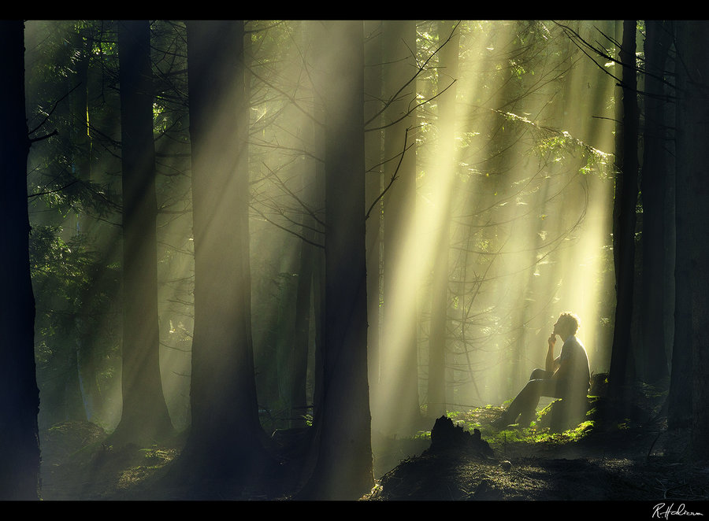
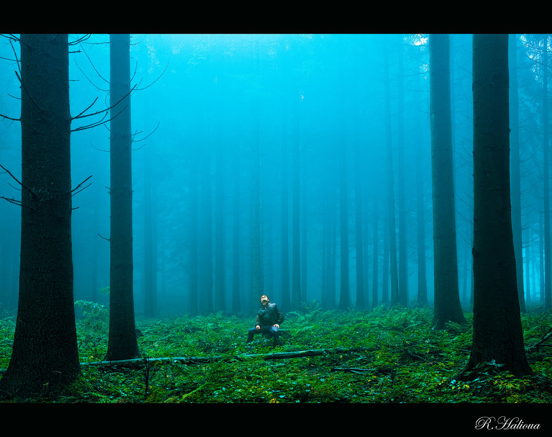
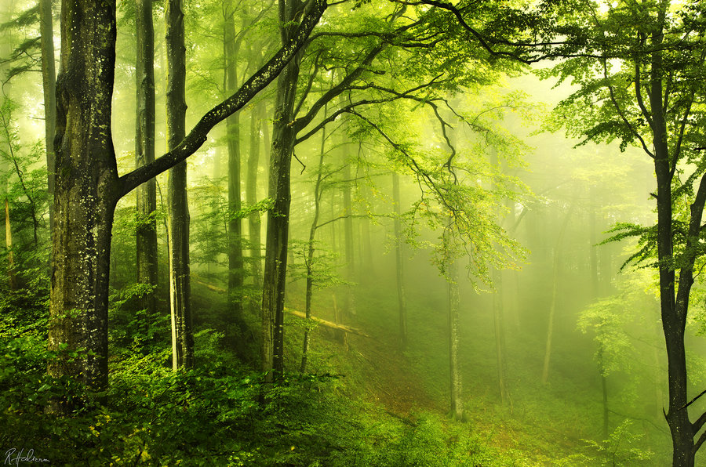
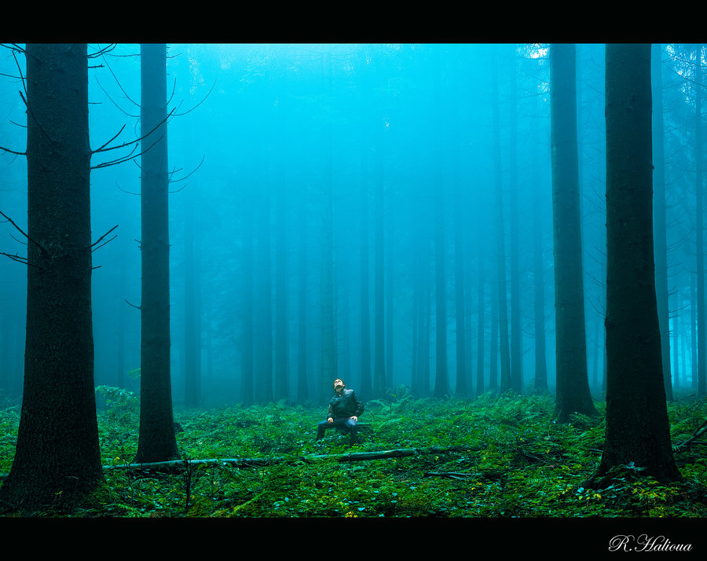
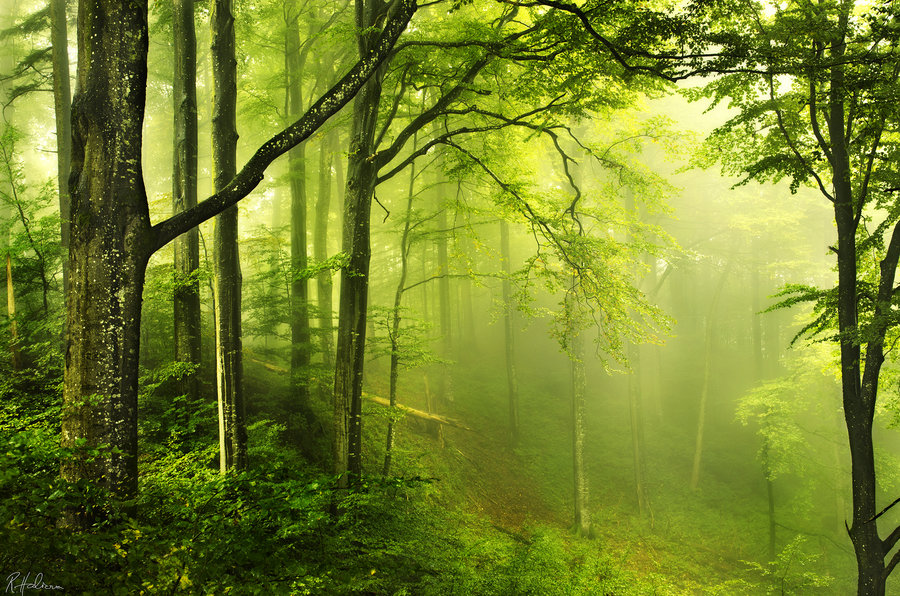

创意的去污液广告
 2016-11-13 20:18
2016-11-13 20:18- 己被围观560 次
瑞士80后风光摄影师RobinHalioua，对于自然界之美的喜爱之情，融入了镜头里。他的风光作品在颜色和光线的运用上很有特色。唯美柔和的色调，透视感强的层次感和空间感，用镜头描绘一幅幅如画的童话仙境。特别是当稀薄的晨雾如轻盈的薄纱弥漫在山林之间，一道道晨光温柔地披散开来，光与影谱写着迷人的旋律，他按下快门，让美丽的瞬间在这一刻定格。希望这组纯粹的美景能带给你心灵的愉悦与享受。
 


